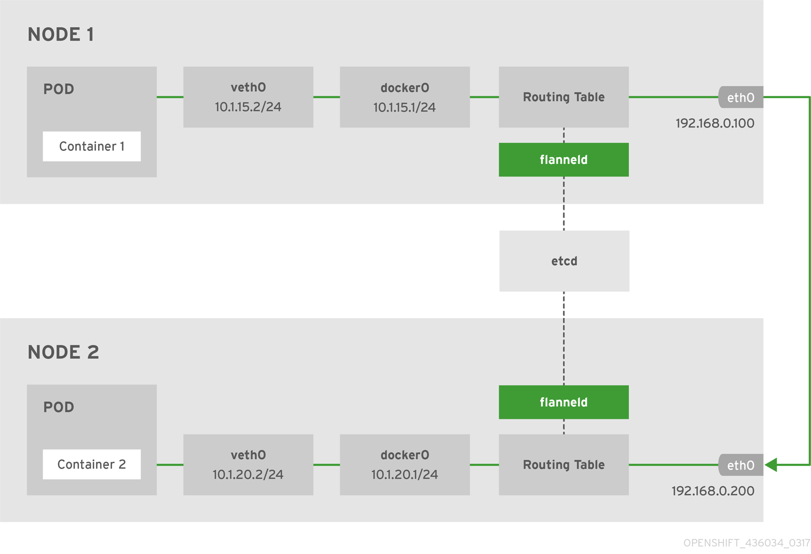

Flannel 插件
当初使用kubernetes-vagrant-centos-cluster安装了拥有三个节点的kubernetes集群，节点的状态如下所述：
[root@node1 ~]# kubectl get nodes -o wide NAME STATUS ROLES AGE VERSION EXTERNAL-IP OS-IMAGE KERNEL-VERSION CONTAINER-RUNTIME node1 Ready <none> 2d v1.9.1 <none> CentOS Linux 7 (Core) 3.10.0-693.11.6.el7.x86_64 docker://1.12.6 node2 Ready <none> 2d v1.9.1 <none> CentOS Linux 7 (Core) 3.10.0-693.11.6.el7.x86_64 docker://1.12.6 node3 Ready <none> 2d v1.9.1 <none> CentOS Linux 7 (Core) 3.10.0-693.11.6.el7.x86_64 docker://1.12.6
当前Kubernetes集群中运行的所有Pod信息：
[root@node1 ~]# kubectl get pods --all-namespaces -o wide NAMESPACE NAME READY STATUS RESTARTS AGE IP NODE kube-system coredns-5984fb8cbb-sjqv9 1/1 Running 0 1h 172.33.68.2 node1 kube-system coredns-5984fb8cbb-tkfrc 1/1 Running 1 1h 172.33.96.3 node3 kube-system heapster-v1.5.0-684c7f9488-z6sdz 4/4 Running 0 1h 172.33.31.3 node2 kube-system kubernetes-dashboard-6b66b8b96c-mnm2c 1/1 Running 0 1h 172.33.31.2 node2 kube-system monitoring-influxdb-grafana-v4-54b7854697-tw9cd 2/2 Running 2 1h
当前etcd中的注册的宿主机的pod地址网段信息：
[root@node1 ~]# etcdctl ls /kube-centos/network/subnets /kube-centos/network/subnets/172.33.68.0-24 /kube-centos/network/subnets/172.33.31.0-24 /kube-centos/network/subnets/172.33.96.0-24
而每个node上的Pod子网是根据在安装flannel时配置来划分的，在etcd中查看该配置：
[root@node1 ~]# etcdctl get /kube-centos/network/config
{"Network":"172.33.0.0/16","SubnetLen":24,"Backend":{"Type":"host-gw"}}
Kubernetes集群内部存在三类IP，分别是：
- Node IP： 宿主机 的IP地址
- Pod IP：使用 网络插件 创建的IP（如flannel），使 跨主机的Pod 可以互通
- Cluster IP： 虚拟 IP，通过 iptables规则 访问服务
在安装node节点的时候，节点上的进程是按照flannel -> docker -> kubelet -> kube-proxy的顺序启动的 下面也会按照该顺序来讲解，flannel的网络划分和如何与docker交互，如何通过iptables访问service
Flannel
Flannel是作为一个 二进制文件 的方式部署在每个node上，主要实现两个功能：
- 为每个 node 分配 subnet ，容器将自动从该子网中获取IP地址
- 当有 node 加入 到网络中时，为每个node 增加路由配置
下面是使用host-gw backend的flannel网络架构图：

注意：以上IP非本示例中的IP，但是不影响理解
Node1上的flannel配置如下:
[root@node1 ~]# cat /usr/lib/systemd/system/flanneld.service [Unit] Description=Flanneld overlay address etcd agent After=network.target After=network-online.target Wants=network-online.target After=etcd.service Before=docker.service [Service] Type=notify EnvironmentFile=/etc/sysconfig/flanneld EnvironmentFile=-/etc/sysconfig/docker-network ExecStart=/usr/bin/flanneld-start $FLANNEL_OPTIONS ExecStartPost=/usr/libexec/flannel/mk-docker-opts.sh -k DOCKER_NETWORK_OPTIONS -d /run/flannel/docker Restart=on-failure [Install] WantedBy=multi-user.target RequiredBy=docker.service
其中有两个环境变量文件的配置如下：
[root@node1 ~]# cat /etc/sysconfig/flanneld # Flanneld configuration options FLANNEL_ETCD_ENDPOINTS="http://172.17.8.101:2379" FLANNEL_ETCD_PREFIX="/kube-centos/network" FLANNEL_OPTIONS="-iface=eth2"
上面的配置文件仅供flanneld使用：
[root@node1 ~]# cat /etc/sysconfig/docker-network # /etc/sysconfig/docker-network DOCKER_NETWORK_OPTIONS=
还有一个 ExecStartPost=/usr/libexec/flannel/mk-docker-opts.sh -k DOCKER_NETWORK_OPTIONS -d /run/flannel/docker ，其中的 /usr/libexec/flannel/mk-docker-opts.sh 脚本是在flanneld启动后运行，将会生成两个环境变量配置文件：
- /run/flannel/docker
- /run/flannel/subnet.env
来看下/run/flannel/docker 的配置：
[root@node1 ~]# cat /run/flannel/docker DOCKER_OPT_BIP="--bip=172.33.68.1/24" DOCKER_OPT_IPMASQ="--ip-masq=true" DOCKER_OPT_MTU="--mtu=1500" DOCKER_NETWORK_OPTIONS=" --bip=172.33.68.1/24 --ip-masq=true --mtu=1500"
如果使用systemctl命令先启动flannel后启动docker的话，docker将会读取以上环境变量
再来看下/run/flannel/subnet.env的配置：
[root@node1 ~]# cat /run/flannel/subnet.env FLANNEL_NETWORK=172.33.0.0/16 FLANNEL_SUBNET=172.33.68.1/24 FLANNEL_MTU=1500 FLANNEL_IPMASQ=false
以上环境变量是flannel向etcd中注册的
Docker
Node1的docker配置如下：
[root@node1 ~]# cat /usr/lib/systemd/system/docker.service [Unit] Description=Docker Application Container Engine Documentation=http://docs.docker.com After=network.target rhel-push-plugin.socket registries.service Wants=docker-storage-setup.service Requires=docker-cleanup.timer [Service] Type=notify NotifyAccess=all EnvironmentFile=-/run/containers/registries.conf EnvironmentFile=-/etc/sysconfig/docker EnvironmentFile=-/etc/sysconfig/docker-storage EnvironmentFile=-/etc/sysconfig/docker-network Environment=GOTRACEBACK=crash Environment=DOCKER_HTTP_HOST_COMPAT=1 Environment=PATH=/usr/libexec/docker:/usr/bin:/usr/sbin ExecStart=/usr/bin/dockerd-current \ --add-runtime docker-runc=/usr/libexec/docker/docker-runc-current \ --default-runtime=docker-runc \ --exec-opt native.cgroupdriver=systemd \ --userland-proxy-path=/usr/libexec/docker/docker-proxy-current \ $OPTIONS \ $DOCKER_STORAGE_OPTIONS \ $DOCKER_NETWORK_OPTIONS \ $ADD_REGISTRY \ $BLOCK_REGISTRY \ $INSECURE_REGISTRY\ $REGISTRIES ExecReload=/bin/kill -s HUP $MAINPID LimitNOFILE=1048576 LimitNPROC=1048576 LimitCORE=infinity TimeoutStartSec=0 Restart=on-abnormal MountFlags=slave KillMode=process [Install] WantedBy=multi-user.target
查看Node1上的docker启动参数：
[root@node1 ~]# systemctl status -l docker
● docker.service - Docker Application Container Engine
Loaded: loaded (/usr/lib/systemd/system/docker.service; enabled; vendor preset: disabled)
Drop-In: /usr/lib/systemd/system/docker.service.d
└─flannel.conf
Active: active (running) since Fri 2018-02-02 22:52:43 CST; 2h 28min ago
Docs: http://docs.docker.com
Main PID: 4334 (dockerd-current)
CGroup: /system.slice/docker.service
‣ 4334 /usr/bin/dockerd-current --add-runtime docker-runc=/usr/libexec/docker/docker-runc-current --default-runtime=docker-runc --exec-opt native.cgroupdriver=systemd --userland-proxy-path=/usr/libexec/docker/docker-proxy-current --selinux-enabled --log-driver=journald --signature-verification=false --bip=172.33.68.1/24 --ip-masq=true --mtu=1500
可以看到在docker在启动时有如下参数：--bip=172.33.68.1/24 --ip-masq=true --mtu=1500 上述参数flannel启动时运行的脚本生成的，通过环境变量传递过来的
宿主机
网络接口
看下node1宿主机上的网络接口：
[root@node1 ~]# ip addr
1: lo: <LOOPBACK,UP,LOWER_UP> mtu 65536 qdisc noqueue state UNKNOWN qlen 1
link/loopback 00:00:00:00:00:00 brd 00:00:00:00:00:00
inet 127.0.0.1/8 scope host lo
valid_lft forever preferred_lft forever
inet6 ::1/128 scope host
valid_lft forever preferred_lft forever
2: eth0: <BROADCAST,MULTICAST,UP,LOWER_UP> mtu 1500 qdisc pfifo_fast state UP qlen 1000
link/ether 52:54:00:00:57:32 brd ff:ff:ff:ff:ff:ff
inet 10.0.2.15/24 brd 10.0.2.255 scope global dynamic eth0
valid_lft 85095sec preferred_lft 85095sec
inet6 fe80::5054:ff:fe00:5732/64 scope link
valid_lft forever preferred_lft forever
3: eth1: <BROADCAST,MULTICAST,UP,LOWER_UP> mtu 1500 qdisc pfifo_fast state UP qlen 1000
link/ether 08:00:27:7b:0f:b1 brd ff:ff:ff:ff:ff:ff
inet 172.17.8.101/24 brd 172.17.8.255 scope global eth1
valid_lft forever preferred_lft forever
4: eth2: <BROADCAST,MULTICAST,UP,LOWER_UP> mtu 1500 qdisc pfifo_fast state UP qlen 1000
link/ether 08:00:27:ef:25:06 brd ff:ff:ff:ff:ff:ff
inet 172.30.113.231/21 brd 172.30.119.255 scope global dynamic eth2
valid_lft 85096sec preferred_lft 85096sec
inet6 fe80::a00:27ff:feef:2506/64 scope link
valid_lft forever preferred_lft forever
5: docker0: <BROADCAST,MULTICAST,UP,LOWER_UP> mtu 1500 qdisc noqueue state UP
link/ether 02:42:d0:ae:80:ea brd ff:ff:ff:ff:ff:ff
inet 172.33.68.1/24 scope global docker0
valid_lft forever preferred_lft forever
inet6 fe80::42:d0ff:feae:80ea/64 scope link
valid_lft forever preferred_lft forever
7: veth295bef2@if6: <BROADCAST,MULTICAST,UP,LOWER_UP> mtu 1500 qdisc noqueue master docker0 state UP
link/ether 6a:72:d7:9f:29:19 brd ff:ff:ff:ff:ff:ff link-netnsid 0
inet6 fe80::6872:d7ff:fe9f:2919/64 scope link
valid_lft forever preferred_lft forever
解释下该虚拟机中的网络接口：
- lo：回环网络，127.0.0.1
- eth0：NAT网络，虚拟机创建时自动分配，仅可以在几台虚拟机之间访问
- eth1：bridge网络，使用vagrant分配给虚拟机的地址，虚拟机之间和本地电脑都可以访问
- eth2：bridge网络，使用DHCP分配，用于访问互联网的网卡
- docker0：bridge网络，docker默认使用的网卡，作为该节点上所有容器的虚拟交换机
- veth295bef2@if6：veth pair，连接docker0和Pod中的容器：
- veth pair可以理解为使用网线连接好的两个接口，把两个端口放到两个namespace中，那么这两个namespace就能打通
再看下该节点的docker上有哪些网络：
[root@node1 ~]# docker network ls NETWORK ID NAME DRIVER SCOPE 940bb75e653b bridge bridge local d94c046e105d host host local 2db7597fd546 none null local
再检查下bridge网络940bb75e653b的信息：
[root@node1 ~]# docker network inspect 940bb75e653b
[
{
"Name": "bridge",
"Id": "940bb75e653bfa10dab4cce8813c2b3ce17501e4e4935f7dc13805a61b732d2c",
"Scope": "local",
"Driver": "bridge",
"EnableIPv6": false,
"IPAM": {
"Driver": "default",
"Options": null,
"Config": [
{
"Subnet": "172.33.68.1/24",
"Gateway": "172.33.68.1"
}
]
},
"Internal": false,
"Containers": {
"944d4aa660e30e1be9a18d30c9dcfa3b0504d1e5dbd00f3004b76582f1c9a85b": {
"Name": "k8s_POD_coredns-5984fb8cbb-sjqv9_kube-system_c5a2e959-082a-11e8-b4cd-525400005732_0",
"EndpointID": "7397d7282e464fc4ec5756d6b328df889cdf46134dbbe3753517e175d3844a85",
"MacAddress": "02:42:ac:21:44:02",
"IPv4Address": "172.33.68.2/24",
"IPv6Address": ""
}
},
"Options": {
"com.docker.network.bridge.default_bridge": "true",
"com.docker.network.bridge.enable_icc": "true",
"com.docker.network.bridge.enable_ip_masquerade": "true",
"com.docker.network.bridge.host_binding_ipv4": "0.0.0.0",
"com.docker.network.bridge.name": "docker0",
"com.docker.network.driver.mtu": "1500"
},
"Labels": {}
}
]
可以看到该网络中的Config与docker的启动配置相符
路由
Node1上运行的容器：
[root@node1 ~]# docker ps CONTAINER ID IMAGE COMMAND CREATED STATUS PORTS NAMES a37407a234dd docker.io/coredns/coredns@sha256:adf2e5b4504ef9ffa43f16010bd064273338759e92f6f616dd159115748799bc "/coredns -conf /etc/" About an hour ago Up About an hour k8s_coredns_coredns-5984fb8cbb-sjqv9_kube-system_c5a2e959-082a-11e8-b4cd-525400005732_0 944d4aa660e3 docker.io/openshift/origin-pod "/usr/bin/pod" About an hour ago Up About an hour k8s_POD_coredns-5984fb8cbb-sjqv9_kube-system_c5a2e959-082a-11e8-b4cd-525400005732_0
可以看到当前已经有2个容器在运行
Node1上的路由信息：
[root@node1 ~]# route -n Kernel IP routing table Destination Gateway Genmask Flags Metric Ref Use Iface 0.0.0.0 10.0.2.2 0.0.0.0 UG 100 0 0 eth0 0.0.0.0 172.30.116.1 0.0.0.0 UG 101 0 0 eth2 10.0.2.0 0.0.0.0 255.255.255.0 U 100 0 0 eth0 172.17.8.0 0.0.0.0 255.255.255.0 U 100 0 0 eth1 172.30.112.0 0.0.0.0 255.255.248.0 U 100 0 0 eth2 172.33.68.0 0.0.0.0 255.255.255.0 U 0 0 0 docker0 172.33.96.0 172.30.118.65 255.255.255.0 UG 0 0 0 eth2
以上路由信息是由flannel添加的，当有新的节点加入到Kubernetes集群中后，每个节点上的路由表都将增加
在node上来traceroute下node3上的coredns-5984fb8cbb-tkfrc容器，其IP地址是172.33.96.3，看看其路由信息：
[root@node1 ~]# traceroute 172.33.96.3 traceroute to 172.33.96.3 (172.33.96.3), 30 hops max, 60 byte packets 1 172.30.118.65 (172.30.118.65) 0.518 ms 0.367 ms 0.398 ms 2 172.33.96.3 (172.33.96.3) 0.451 ms 0.352 ms 0.223 ms
路由直接经过node3的公网IP后就到达了node3节点上的Pod
iptables
Node1的iptables信息：
[root@node1 ~]# iptables -L Chain INPUT (policy ACCEPT) target prot opt source destination KUBE-FIREWALL all -- anywhere anywhere KUBE-SERVICES all -- anywhere anywhere /* kubernetes service portals */ Chain FORWARD (policy ACCEPT) target prot opt source destination KUBE-FORWARD all -- anywhere anywhere /* kubernetes forward rules */ DOCKER-ISOLATION all -- anywhere anywhere DOCKER all -- anywhere anywhere ACCEPT all -- anywhere anywhere ctstate RELATED,ESTABLISHED ACCEPT all -- anywhere anywhere ACCEPT all -- anywhere anywhere Chain OUTPUT (policy ACCEPT) target prot opt source destination KUBE-FIREWALL all -- anywhere anywhere KUBE-SERVICES all -- anywhere anywhere /* kubernetes service portals */ Chain DOCKER (1 references) target prot opt source destination Chain DOCKER-ISOLATION (1 references) target prot opt source destination RETURN all -- anywhere anywhere Chain KUBE-FIREWALL (2 references) target prot opt source destination DROP all -- anywhere anywhere /* kubernetes firewall for dropping marked packets */ mark match 0x8000/0x8000 Chain KUBE-FORWARD (1 references) target prot opt source destination ACCEPT all -- anywhere anywhere /* kubernetes forwarding rules */ mark match 0x4000/0x4000 ACCEPT all -- 10.254.0.0/16 anywhere /* kubernetes forwarding conntrack pod source rule */ ctstate RELATED,ESTABLISHED ACCEPT all -- anywhere 10.254.0.0/16 /* kubernetes forwarding conntrack pod destination rule */ ctstate RELATED,ESTABLISHED Chain KUBE-SERVICES (2 references) target prot opt source destination
从上面的iptables中可以看到注入了很多Kuberentes service的规则